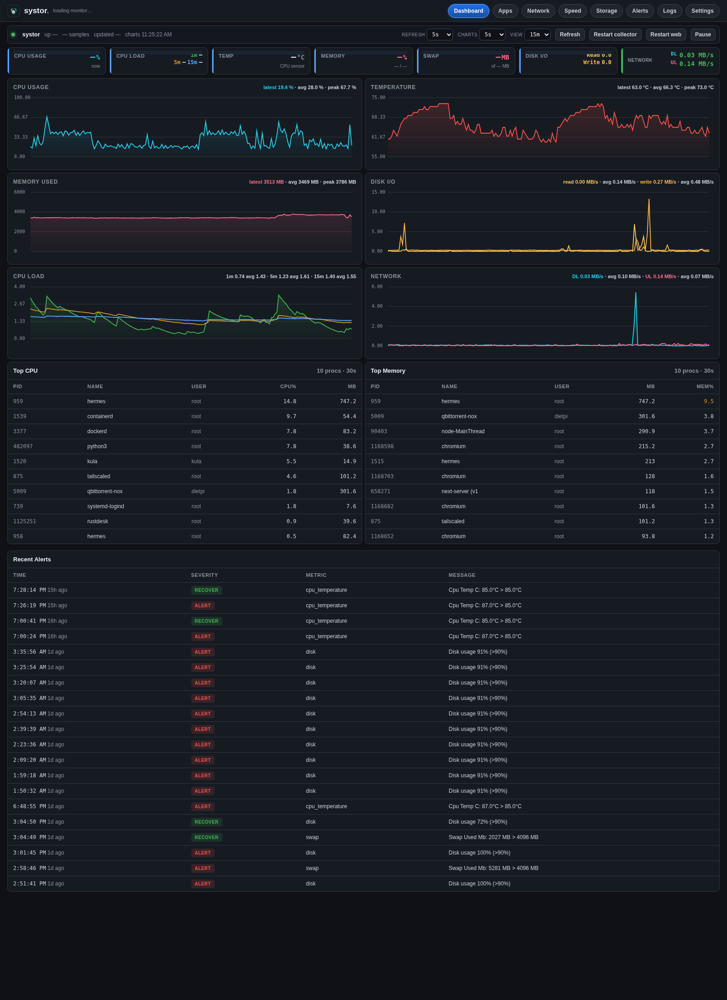
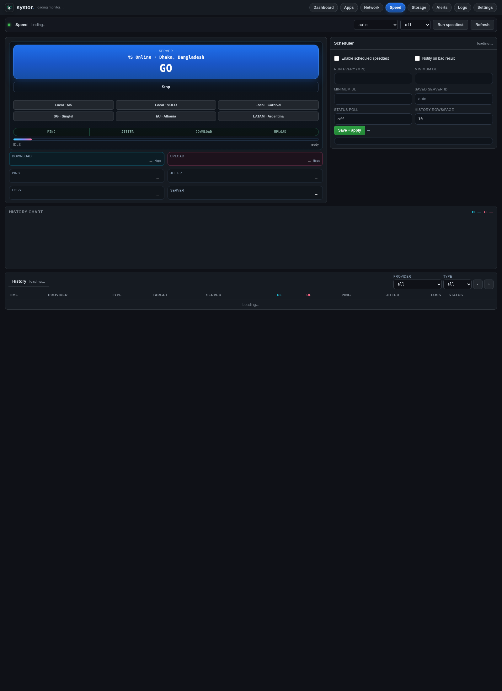

⌂
Live dashboard
CPU, temp, RAM, swap, disk I/O, load, network charts, top processes, recent alerts.
Lightweight Linux monitoring for DietPi, Raspberry Pi, home servers, and small VPS hosts. One Flask app, one collector, SQLite — real dashboards and alerts without the Prometheus stack.
Built when you want observability on a box that cannot afford another 250 MB of Java and YAML.
| Tool | Typical RAM | Setup | Notifications |
|---|---|---|---|
| Prometheus + Grafana | 250 MB+ | Hours | Alertmanager |
| Netdata | 200 MB+ | One command | Email / webhook |
| Glances (web) | ~30 MB | One command | Limited |
| systor | ~25 MB | install.sh | Telegram + Discord |
Same GitHub-dark UI as the running app — no SPA, no Electron, no agent protocol.
CPU, temp, RAM, swap, disk I/O, load, network charts, top processes, recent alerts.
Host and Docker processes ranked by CPU, RAM, network, and disk.
Per-interface traffic and daily / monthly / yearly usage tables.
Official Ookla CLI runs, scheduler, history, and threshold alerts.
Allowed-root browser, uploads, trash/restore, duplicate scan, action password.
Threshold + duration so one spike does not wake you at 3 AM.
Telegram and Discord with test buttons, cooldowns, and live SIGHUP reload.
Read-only dashboard on the internet; full admin on LAN, localhost, or Tailscale.
From a real install — not mockups.


Copies to /opt/systor, systemd units, config under /etc/systor.
git clone https://github.com/SeaXen/systor.git
cd systor
sudo ./install.shOpen http://127.0.0.1:6677 or http://<host-ip>:6677 on your LAN.
Two long-lived processes — collector samples metrics; web serves the UI.
systor-collector + systor-web